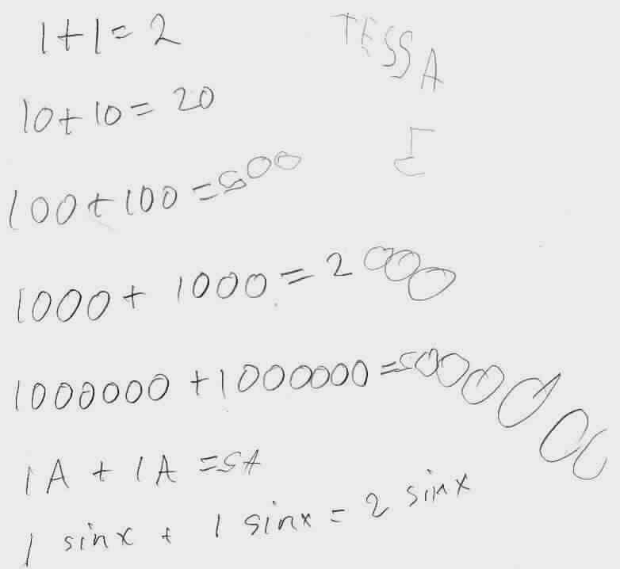

Tessa, at age 5: 1 tangent x + 1 tangent x = 2 tangent x, + +
(Don's granddaughter!)
July 21, 2001

Don asked "What's 1 plus 1?". Tessa said "2". Don asked "What's 1 ten plus 1 ten?". Tessa answered "twenty". Don said "Yes, 2 tens". And then they continued like that. After this 5-minute math session, most of her aunts and uncles gave her problems like these and she could do them correctly. In fact, she did verbally, 1/7 + 1/7 = 2/7, 1 tangent x + 1 tangent x = 2 tangent x, and 1 negative + 1 negative = 2 negative. She also kept giving other people problems like these!
The next day July 22, 2001, Don asked Tessa "What is 1x2 + 1x2 = ?", Tessa said "2x2 ". Then she said "Oh Grandpa, give me harder ones!" Don gave her 2 tangent x - 1 tangent x. She wasn't sure about the subtraction, so Don just showed her 2 fingers and took away 1 finger, saying 2 take away 1 = 1. So Tessa could do 2 tangent x - 1 tangent x = 1 tangent x.
Notice Tessa writes her 2's and 5's backwards and Don never said anything to her! Her Mom said she had done 10 + 10 = 20 recently.
Why does Don think this is an important lesson? For one thing, the kids really get excited about handling large numbers quickly. Two, there is a pattern to these that they understand. And 3, this is algebra they are doing, not just arithmetic- because 1 of anything + 1 of the same thing is always 2 of the same thing or as they say in algebra: 1x + 1x = 2x.
Don had Terri, Tessa's Mom, put the 3D Multiplication Tables together (see the stack). Then Terri worked with Tessa on it. Here are some pictures of this.